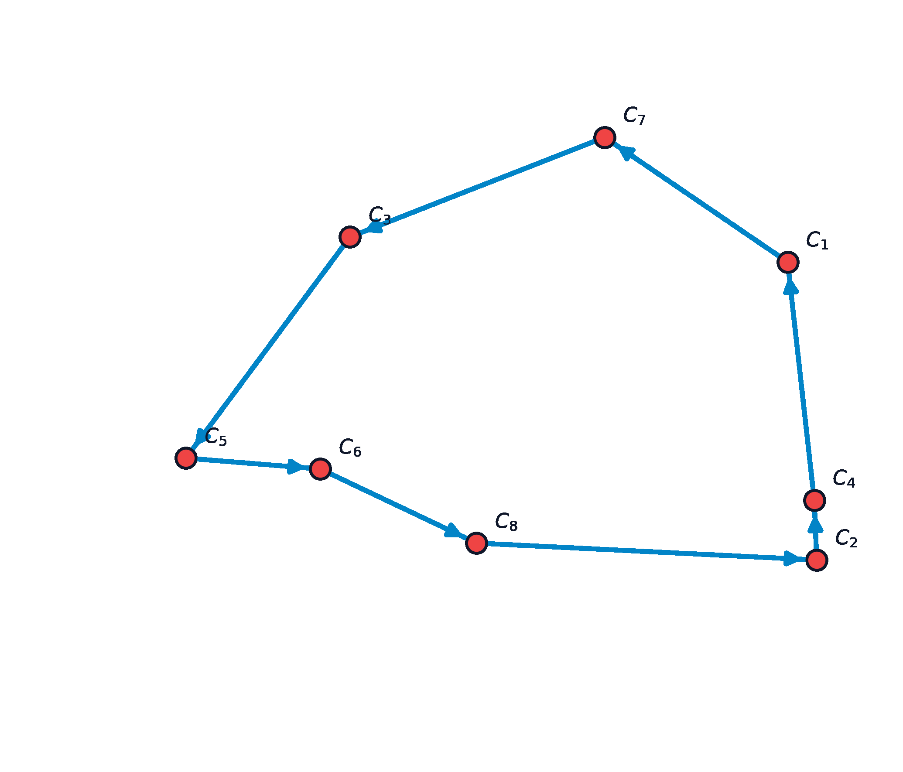

11 Rutas Eulerianas, Hamiltonianas y TSP
El diseño de rutas óptimas es uno de los campos más estudiados de la optimización combinatoria y la logística de distribución. Abarca desde problemas solubles en tiempo polinomial, como la determinación de rutas que recorren todas las calles (aristas) de una ciudad al menor coste (el Problema del Cartero Chino), hasta problemas altamente complejos y NP-duros, como la secuenciación de visitas a clientes (vértices) minimizando el kilometraje total sin repetir visitas (el Problema del Viajante o TSP), constituyendo uno de los desafíos más célebres y estudiados de la optimización entera y combinatoria (Papadimitriou y Steiglitz 1998; Wolsey 1998).
En este capítulo, analizaremos la caracterización matemática de las rutas eulerianas y hamiltonianas, la resolución del Problema del Cartero Chino mediante emparejamientos de coste mínimo, la formulación matemática del TSP con restricciones de eliminación de subtours (DFJ y MTZ), las principales heurísticas constructivas y de mejora local (2-opt), y el algoritmo de aproximación de Christofides.
Al finalizar este capítulo, serás capaz de:
- Diferenciar entre grafos eulerianos y hamiltonianos, explicando la disparidad en su complejidad computacional inherente (P frente a NP-completo).
- Aplicar los teoremas de Euler para verificar la existencia de ciclos y caminos eulerianos basándote en la paridad del grado de los nodos.
- Resolver el Problema del Cartero Chino en grafos no dirigidos no eulerianos aplicando el cálculo de caminos mínimos y emparejamientos perfectos de peso mínimo.
- Evaluar la hamiltonianidad de un grafo simple a través de las condiciones de suficiencia de Dirac y Ore.
- Formular formalmente el Problema del Viajante (TSP) como un programa lineal entero, comparando las formulaciones DFJ (exponencial) y MTZ (polinomial).
- Implementar y comparar heurísticas constructivas (Vecino más cercano) e incremento de calidad (2-opt), así como el algoritmo de Christofides, resolviendo estos problemas en Python mediante NetworkX.
11.1 Grafos Eulerianas
Un grafo conexo es euleriano si admite un recorrido cerrado que recorre cada arista exactamente una vez y regresa al nodo de origen. El origen del estudio de estos grafos se remonta a 1736, cuando Leonhard Euler resolvió el famoso problema de los Puentes de Königsberg, sentando las bases de la teoría de grafos moderna al demostrar que no existía una ruta que cruzara los siete puentes de la ciudad sin repetir ninguno.
Un grafo simple conexo no dirigido \(G = (V, E)\) contiene un ciclo euleriano si y solo si todos sus vértices tienen grado par: \[ d(v) \equiv 0 \pmod 2, \quad \forall v \in V \]
Un grafo simple conexo no dirigido \(G = (V, E)\) contiene un camino euleriano abierto (que empieza en un nodo y termina en otro) si y solo si tiene exactamente dos vértices con grado impar. El camino comenzará de forma obligatoria en uno de los vértices impares y terminará en el otro.
11.2 El Problema del Cartero Chino (CPP)
Formulado por el matemático chino Mei-Ko Kwan en 1960, el Problema del Cartero Chino (Chinese Postman Problem, CPP) busca la ruta cerrada de longitud mínima que recorra cada arista del grafo al menos una vez. Su nombre fue acuñado por Alan Goldman en honor al origen de Kwan.
11.2.1 Estrategia de Resolución en Grafos No Dirigidos
Caso A: El grafo es euleriano: Cualquier ciclo euleriano es solución óptima del problema. La longitud de la ruta óptima es exactamente igual a la suma de los pesos de todas las aristas de la red.
Caso B: El grafo no es euleriano: El grafo posee un conjunto de nodos de grado impar. Por el lema del apretón de manos, el número de estos nodos es par, denotado por \(V_{\text{impar}}\) (con \(|V_{\text{impar}}| = 2k\)). Para poder trazar un recorrido euleriano, debemos duplicar ciertos caminos entre estos nodos de grado impar de modo que el coste añadido sea mínimo:
- Calcular la matriz de distancias mínimas \(d(u, v)\) entre todos los pares de nodos pertenecientes a \(V_{\text{impar}}\) (usando algoritmos como Dijkstra o Floyd-Warshall).
- Construir un grafo auxiliar completo cuyos nodos son únicamente los elementos de \(V_{\text{impar}}\), y el peso de cada arista \(\{u, v\}\) es la distancia del camino mínimo \(d(u, v)\) calculado en el paso anterior.
- Encontrar un emparejamiento perfecto de peso mínimo en este grafo auxiliar completo.
- Duplicar las aristas correspondientes a las parejas seleccionadas por el emparejamiento perfecto en el grafo original. El multigrafo resultante ahora posee únicamente nodos de grado par, convirtiéndose en un grafo euleriano.
- Calcular el ciclo euleriano sobre este multigrafo modificado.
11.3 Ciclos Hamiltonianos
Un ciclo hamiltoniano es un ciclo simple que visita cada nodo de la red exactamente una vez (excepto el inicial, al que regresa para cerrar el ciclo). Su nombre se debe al matemático irlandés William Rowan Hamilton, quien en 1857 inventó el Juego Icosian, consistente en encontrar un camino a lo largo de las aristas de un dodecaedro regular que visitara cada vértice una sola vez.
A diferencia del problema euleriano, que se resuelve de forma inmediata analizando la paridad de los grados en tiempo lineal, determinar si un grafo general contiene un ciclo hamiltoniano es un problema NP-completo. No se conocen condiciones necesarias y suficientes sencillas de verificar.
11.3.1 Teoremas de Suficiencia de Hamiltonianidad
Disponemos de condiciones suficientes basadas en la densidad de aristas o en los grados mínimos de los nodos:
Si \(G = (V, E)\) es un grafo simple con \(n \ge 3\) vértices tal que el grado de todo vértice cumple: \[ d(v) \ge \frac{n}{2}, \quad \forall v \in V \] Entonces \(G\) contiene al menos un ciclo hamiltoniano.
Si \(G = (V, E)\) es un grafo simple con \(n \ge 3\) vértices tal que para cualquier pareja de vértices no adyacentes \(u, v \in V\) se cumple: \[ d(u) + d(v) \ge n \] Entonces \(G\) contiene al menos un ciclo hamiltoniano.
11.4 El Problema del Viajante (TSP)

El Problema del Viajante (Traveling Salesperson Problem, TSP) busca encontrar el ciclo hamiltoniano de menor longitud o coste total en un grafo completo valorado.
11.4.1 Formulación Lineal Entera DFJ (Dantzig-Fulkerson-Johnson, 1954)
Sean variables binarias \(x_{ij} = 1\) si la ruta óptima incluye ir directamente del nodo \(i\) al nodo \(j\), y 0 en caso contrario.
\[ \begin{aligned} \min_{x} \quad & \sum_{i=1}^n \sum_{j=1}^n c_{ij} x_{ij} \\ \text{sujeto a} \quad & \sum_{j=1}^n x_{ij} = 1, \quad \forall i = 1, \dots, n \\ & \sum_{i=1}^n x_{ij} = 1, \quad \forall j = 1, \dots, n \\ & \sum_{i \in S, j \in S} x_{ij} \le |S| - 1, \quad \forall S \subset V \quad \text{con} \quad 2 \le |S| \le n-1 \\ & x_{ij} \in \{0, 1\}, \quad \forall i, j \end{aligned} \]
Las restricciones de eliminación de subtours (tercera inecuación) evitan que el modelo genere soluciones compuestas por ciclos independientes inconexos que no recorren la totalidad de los nodos en una sola traza. Como el número de subconjuntos \(S\) crece de forma exponencial (\(2^n - 2\)), en la práctica estas restricciones se añaden dinámicamente mediante algoritmos de corte (Branch-and-Cut).
11.4.2 Formulación Lineal Entera MTZ (Miller-Tucker-Zemlin, 1960)
Una alternativa para evitar la formulación exponencial es introducir variables auxiliares continuas \(u_i \in \mathbb{R}\) que representan el “orden de visita” de cada nodo \(i\):
\[ \begin{aligned} u_i - u_j + n x_{ij} \le n - 1, \quad \forall i, j \in \{2, \dots, n\} \text{ con } i \neq j \end{aligned} \]
- Ventaja: El número de restricciones de eliminación de subtours es polinomial (\(O(n^2)\)), lo que permite escribir el modelo completo directamente en solvers convencionales.
- Desventaja: La relajación lineal del modelo MTZ es significativamente más débil que la del modelo DFJ. Esto provoca que los solvers tarden mucho más tiempo en resolver problemas medianos mediante ramificación y acotación (Branch-and-Bound) al no poder acotar el espacio de búsqueda con eficacia.
11.4.3 Heurísticas y Algoritmos de Aproximación
- Heurística del Vecino más Cercano: Algoritmo constructivo ávido (greedy) que parte de un nodo aleatorio y salta en cada paso al nodo no visitado más cercano. Es extremadamente rápido (\(O(n^2)\)), pero presenta el riesgo de dejar nodos aislados muy lejanos para el final, generando un último paso de retorno al origen de coste desorbitado.
- Heurística de Mejora Local 2-Opt: Dada una ruta hamiltoniana válida, busca parejas de aristas que se crucen o cuya reconexión reduzca la longitud de la ruta. En cada paso, reemplaza el par de aristas \(\{ (A, B), (C, D) \}\) por el par \(\{ (A, C), (B, D) \}\), lo que invierte el sentido del recorrido del segmento intermedio. Se aplica iterativamente hasta alcanzar un óptimo local (donde ningún intercambio 2-opt consiga reducir el coste).
En espacios métricos (donde las distancias cumplen la desigualdad triangular \(c_{ij} \le c_{ik} + c_{kj}\)), Christofides proporciona una garantía teórica muy robusta: la solución obtenida no superará el 1.5 veces el coste de la solución óptima global:
- Calcular el árbol soporte de mínimo peso (MST) \(T\) de la red.
- Identificar el conjunto de nodos con grado impar en el árbol \(T\), denotado por \(O\) (debe ser un número par de nodos).
- Calcular un emparejamiento perfecto de peso mínimo \(M\) sobre los nodos de \(O\) utilizando las aristas y distancias del grafo original.
- Unir las aristas de \(T\) y \(M\) para formar un multigrafo euleriano \(H\).
- Encontrar un ciclo euleriano en este multigrafo.
- Transformar el ciclo euleriano en un ciclo hamiltoniano realizando “atajos” (shortcuts), es decir, recorriendo el ciclo y saltando directamente a nodos no visitados omitiendo duplicados.
Demostremos que la ruta obtenida por el algoritmo de Christofides cumple \(Cost(C) \le 1.5 Cost(C^*)\), donde \(C^*\) es el ciclo óptimo del TSP.
- Cota del MST: Si eliminamos una arista del ciclo óptimo \(C^*\), obtenemos un camino soporte que pasa por todos los nodos del grafo. Dado que este camino es un árbol soporte, y el MST \(T\) es por definición el árbol de mínimo peso: \[ Cost(T) \le Cost(\text{camino}) < Cost(C^*) \]
- Cota del Emparejamiento: Sea \(O\) el conjunto de vértices de grado impar en \(T\). Consideremos el ciclo óptimo \(C^*\) proyectado únicamente sobre los vértices de \(O\) mediante atajos. Por la desigualdad triangular, el coste de este ciclo proyectado \(C^*_O\) cumple \(Cost(C^*_O) \le Cost(C^*)\). El ciclo \(C^*_O\) tiene un número par de vértices. Podemos descomponer dicho ciclo en dos emparejamientos perfectos alternos \(M_1\) y \(M_2\) sobre los nodos de \(O\). La suma de sus costes es: \[ Cost(M_1) + Cost(M_2) = Cost(C^*_O) \le Cost(C^*) \] Como \(M\) es el emparejamiento perfecto de peso mínimo sobre \(O\): \[ Cost(M) \le \min \{Cost(M_1), Cost(M_2)\} \le 0.5 Cost(C^*) \]
- Resultado final: Combinando ambas cotas en el multigrafo euleriano \(H = T \cup M\): \[ Cost(H) = Cost(T) + Cost(M) \le Cost(C^*) + 0.5 Cost(C^*) = 1.5 Cost(C^*) \] Al aplicar atajos para obtener el ciclo hamiltoniano \(C\), la desigualdad triangular garantiza que el coste solo puede disminuir: \(Cost(C) \le Cost(H) \le 1.5 Cost(C^*)\). \(\blacksquare\)
11.5 Implementación en Python con NetworkX
El siguiente script construye un grafo de distancias bidimensionales para aproximar el TSP usando el algoritmo de Christofides, y comprueba la eulerianidad para el problema del cartero chino:
import networkx as nx
import math
# 1. Resolver el TSP Metrico usando Christofides
G_tsp = nx.complete_graph(5)
# Coordenadas espaciales de los nodos para garantizar la desigualdad triangular
posiciones = {
0: (0, 0),
1: (1, 3),
2: (4, 4),
3: (6, 1),
4: (2, 1)
}
# Asignar distancias euclideas como pesos de las aristas
for u in G_tsp.nodes():
for v in G_tsp.nodes():
if u != v:
x1, y1 = posiciones[u]
x2, y2 = posiciones[v]
dist = math.sqrt((x1 - x2)**2 + (y1 - y2)**2)
G_tsp[u][v]['weight'] = dist
# Resolver mediante la aproximacion de traveling_salesman_problem (Christofides)
from networkx.algorithms.approximation import traveling_salesman_problem
ruta_optima = traveling_salesman_problem(G_tsp, cycle=True)
print("Ruta aproximada del TSP (Christofides):")
print(f" {ruta_optima}")
coste_ruta = 0
for i in range(len(ruta_optima) - 1):
coste_ruta += G_tsp[ruta_optima[i]][ruta_optima[i+1]]['weight']
print(f"Longitud total de la ruta: {coste_ruta:.4f} unidades")
# 2. Comprobacion de eulerianidad para el Cartero Chino
G_post = nx.Graph()
edges_post = [
(0, 1, 3), (0, 2, 4), (1, 2, 2), (1, 3, 5), (2, 3, 1), (2, 4, 6), (3, 4, 3)
]
G_post.add_weighted_edges_from(edges_post)
es_euler = nx.is_eulerian(G_post)
print(f"\n¿Es euleriano el grafo de reparto?: {es_euler}")
if not es_euler:
nodos_impares = [v for v, d in G_post.degree() if d % 2 != 0]
print(f"Nodos con grado impar que requieren emparejarse: {nodos_impares}")